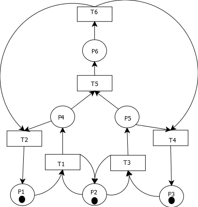
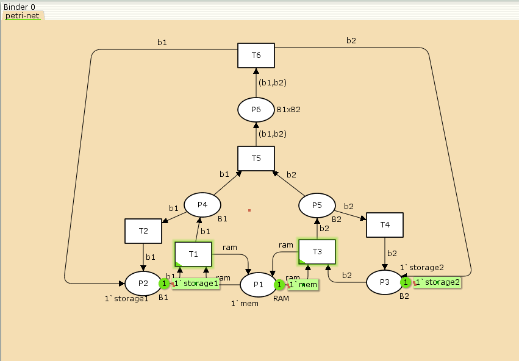
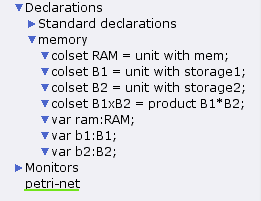
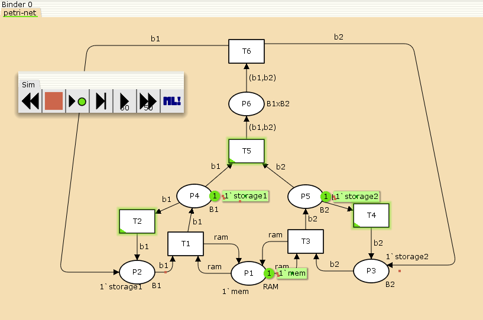
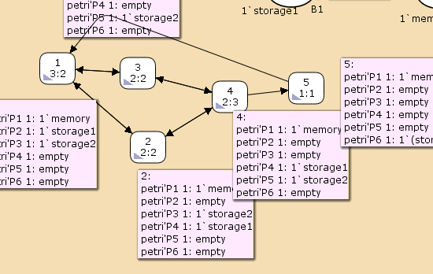

Задание для самостоятельного выполнения
- Герра Гарсия Паола Валентина
- Российский университет дружбы народов, Москва, Россия





Statistics
------------------------------------------------------------------------
State Space
Nodes: 5
Arcs: 10
Secs: 0
Status: FullВ результате выполнения данной лабораторной работы я выполнила задание для самостоятельного выполнения, а именно провела анализ сети Петри, построила сеть в CPN Tools, построила граф состояний и провела его анализ.